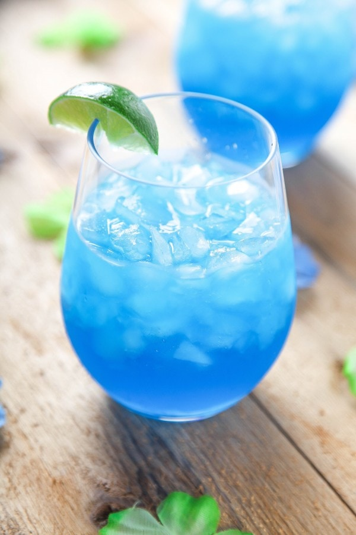

Blue Margarita

These incredibly refreshing margaritas are SO easy!They only require 4
ingredients, and no blender/cocktail shaker!
Ingredients
- 1 Cup Tequila
- ⅓ Cup Blue Curaçao
- ⅓ Cup Triple Sec
- ⅔ Cup Lime Juice Freshly Squeezed (The Juice From ~8 Small Limes).
- Crushed Ice
Steps
- In a large pitcher, combine tequila, triple sec, blue curacao, and
lime juice. Stir until well combined.
- Fill glasses with ice. Pour drinks over ice and enjoy responsibly!
Home